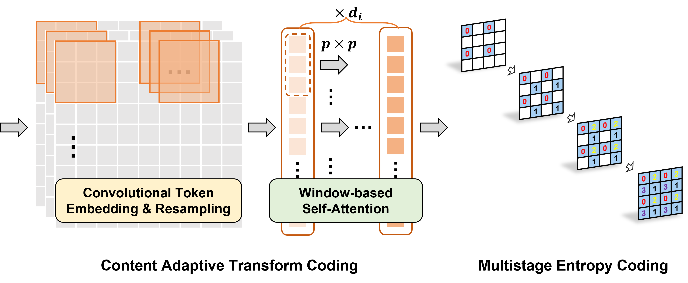

Extra Visualizations


Questing for lossy image coding (LIC) with superior efficiency on both compression performance and computation throughput is challenging. The vital factor behind is how to intelligently explore Adaptive Neighborhood Information Aggregation (ANIA) in transform and entropy coding modules. To this aim, Integrated Convolution and Self-Attention (ICSA) unit is first proposed to form content-adaptive transform to dynamically characterize and embed neighborhood information conditioned on the input. Then a Multistage Context Model (MCM) is developed to stagewisely execute context prediction using necessary neighborhood elements for accurate and parallel entropy probability estimation. Both ICSA and MCM are stacked under a Variational Auto-Encoder (VAE) architecture to derive rate-distortion optimized compact representation of input image via end-to-end training. Our method reports the superior compression performance surpassing the VVC Intra with $\approx$15% BD-rate improvement averaged across Kodak, CLIC and Tecnick datasets; and also demonstrates $\approx$10x speedup of image decoding when compared with other notable learned LIC approaches. All materials are made publicly accessible at https://njuvision.github.io/TinyLIC for reproducible research.

Pipeline of our proposed TinyLIC consists of Content Adaptive Tranform Coding and Multistage Entropy Coding.
| Class | VVC Intra | TinyLIC | ||
|---|---|---|---|---|
| High Bitrate | Low Bitrate | High Bitrate | Low Bitrate | |
| A | -15.1% | -23.6% | -22.5% | -26.6% |
| B | -15.3% | -23.7% | -19.3% | -23.6% |
| C | -22.4% | -28.8% | -28.7% | -31.3% |
| D | -19.0% | -23.5% | -20.5% | -26.4% |
| Ave. | -17.9% | -24.9% | -22.8% | -27.0% |